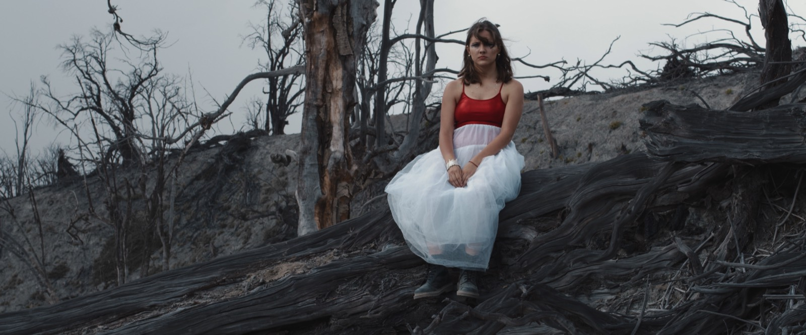

Jaque mate
Un amor fugaz, ligero e inescapable. Pura ilusión.
Escuchar el EP completoCanciones de amor, caos y sanación, hechas en Costa Rica con groove, humor y mucha verdad.
es fio es Fiorella Esquivel: cantante, compositora y productora. Su pop funk latino baila y también duele. "Jaque mate", su primer EP, abre una trilogía sobre las etapas del amor, desde la ilusión de un verano en Cóbano hasta aprender a confiar otra vez. En vivo, la banda lo vuelve fiesta y confesión a la vez.
Déjate atrapar, por este flow que te viene a guiar
— Jaque Mate
"Jaque mate" ya está completo. Incluye "La fiebre", un amor de verano en Cóbano — y una trampa tan bonita como la costa que la inspiró.
También conversamos con CR Indie sobre "Jaque mate" y el viaje en tres actos.
2026 — 2027
Un amor fugaz, ligero e inescapable. Pura ilusión.
Escuchar el EP completoAmor conflictivo. Traición, aislamiento y búsqueda de verdad.
La decisión de confiar sana la herida. Amor profundo, exigente.

Un recorrido emocional que alterna entre momentos íntimos y secciones de alta energía. Sin distancia entre artista y audiencia.
Sin fecha confirmada todavía. Seguinos en Instagram para enterarte primero.